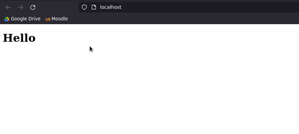

8.2.2022
klo 13.21
Kirjoitin komentotulkkiin cd /var/www/html/
klo 13.22
Kirjoitin komentotulkkiin cat index.html. Sain Apachen esimerkkisivun html koodin tulosteena:
13.25
Kirjoitin komentotulkkiin sudo nano index.html. Tämä avasi html koodin nanossa.
klo 13.28
Haluasin poistaa kaiken sisällön index.html:ssä nanossa. En tiedä miten sen tekisi. Ctrl+A ei näytä valitsevan kaikkea. Googlailun jälkeen näyttää siltä että se ei onnistu.
klo 13.30
Suljin nanon.
Kirjoitin komentotulkkiin sudo micro index.html
Tämän jälkeen: ctrl + A ja delete
Nyt poistui sisältö index.html tiedostosta
klo 13.33
Liitin microon seuraavan html koodin komennolla ctrl+V:
klo 13.35
Säästin muutokset microssa painamalla ctrl + S. Suljin micron komennolla ctrl+Q.
klo 13.36
Avasin apachen komennolla sudo systemctl start apache2
klo 13.37
Kirjoitin komennon firefox localhost
Selaimessa näkyi sivusto
